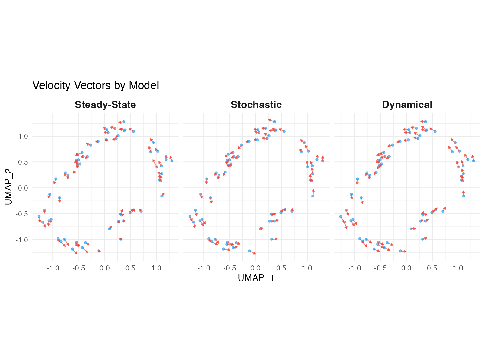

Velocity Model Comparison
Zaoqu Liu
2026-01-26
Source:vignettes/model-comparison.Rmd
model-comparison.RmdIntroduction
scVeloR implements three velocity estimation models, each with distinct assumptions and use cases. This vignette provides a comprehensive comparison to help you choose the appropriate model for your data.
Model Overview
1. Deterministic (Steady-State) Model
Assumption: Cells are near transcriptional equilibrium.
Key equation:
Velocity:
Pros: - Fast computation - Requires minimal data - Works well for slowly changing processes
Cons: - May miss transient dynamics - Assumes equilibrium
2. Stochastic Model
Assumption: Accounts for transcriptional bursting and noise.
Uses: First and second-order moments (mean, variance, covariance)
Pros: - More robust to noise - Better for bursty transcription - Intermediate computational cost
Cons: - Still assumes near-equilibrium - Requires sufficient cell numbers
3. Dynamical Model
Assumption: Full kinetics without equilibrium constraint.
Inferred parameters: α (transcription), β (splicing), γ (degradation), t_ (switching time)
Pros: - Captures transient states - Infers absolute time - Most accurate for complex dynamics
Cons: - Computationally intensive - Requires high-quality data - May overfit small datasets
Comparison Table
| Feature | Steady-State | Stochastic | Dynamical |
|---|---|---|---|
| Speed | ~1 min | ~5 min | ~30 min |
| Data requirement | Low | Medium | High |
| Parameters inferred | <U+03B3> only | <U+03B3> only | <U+03B1>, <U+03B2>, <U+03B3>, t_ |
| Handles transient states | No | Partial | Yes |
| Provides latent time | No | No | Yes |
| Recommended dataset size | >1,000 cells | >3,000 cells | >5,000 cells |
| Best for | Exploration | Default choice | Publication |
Visual Comparison

Velocity vectors from different models showing varying sensitivity to dynamics.
When to Use Each Model
Use Steady-State When:
- Quick exploration: Getting a first look at your data
- Large datasets: >50,000 cells where speed matters
- Equilibrium processes: Homeostatic cell populations
- Limited compute resources
seurat_obj <- velocity(seurat_obj, mode = "deterministic")Use Stochastic When:
- Default choice: Good balance of speed and accuracy
- Noisy data: High technical variability
- Transcriptional bursting: Known bursty gene expression
seurat_obj <- velocity(seurat_obj, mode = "stochastic")Use Dynamical When:
- Publication-quality results: Need the most accurate estimates
- Transient states: Rapid differentiation, cell activation
- Latent time needed: Want absolute temporal ordering
- Parameter interpretation: Need kinetic rate estimates
seurat_obj <- velocity(seurat_obj, mode = "dynamical", max_iter = 10)Practical Workflow
Recommended Approach
library(scVeloR)
# 1. Start with steady-state for quick exploration
seurat_obj <- velocity(seurat_obj, mode = "deterministic")
plot_velocity(seurat_obj)
# 2. If results look promising, try stochastic
seurat_obj <- velocity(seurat_obj, mode = "stochastic")
plot_velocity(seurat_obj)
# 3. For final analysis, use dynamical
seurat_obj <- velocity(seurat_obj, mode = "dynamical")
plot_velocity(seurat_obj)
# 4. Compare results
velocity_summary(seurat_obj)Session Information
sessionInfo()
#> R version 4.4.0 (2024-04-24)
#> Platform: aarch64-apple-darwin20
#> Running under: macOS 15.6.1
#>
#> Matrix products: default
#> BLAS: /Library/Frameworks/R.framework/Versions/4.4-arm64/Resources/lib/libRblas.0.dylib
#> LAPACK: /Library/Frameworks/R.framework/Versions/4.4-arm64/Resources/lib/libRlapack.dylib; LAPACK version 3.12.0
#>
#> locale:
#> [1] C
#>
#> time zone: Asia/Shanghai
#> tzcode source: internal
#>
#> attached base packages:
#> [1] stats graphics grDevices utils datasets methods base
#>
#> other attached packages:
#> [1] ggplot2_4.0.1
#>
#> loaded via a namespace (and not attached):
#> [1] gtable_0.3.6 jsonlite_2.0.0 dplyr_1.1.4 compiler_4.4.0
#> [5] tidyselect_1.2.1 dichromat_2.0-0.1 jquerylib_0.1.4 systemfonts_1.3.1
#> [9] scales_1.4.0 textshaping_1.0.4 yaml_2.3.12 fastmap_1.2.0
#> [13] R6_2.6.1 labeling_0.4.3 generics_0.1.4 knitr_1.51
#> [17] htmlwidgets_1.6.4 tibble_3.3.1 desc_1.4.3 bslib_0.9.0
#> [21] pillar_1.11.1 RColorBrewer_1.1-3 rlang_1.1.7 cachem_1.1.0
#> [25] xfun_0.56 fs_1.6.6 sass_0.4.10 S7_0.2.1
#> [29] otel_0.2.0 viridisLite_0.4.2 cli_3.6.5 pkgdown_2.1.3
#> [33] withr_3.0.2 magrittr_2.0.4 digest_0.6.39 grid_4.4.0
#> [37] lifecycle_1.0.5 vctrs_0.7.1 evaluate_1.0.5 glue_1.8.0
#> [41] farver_2.1.2 ragg_1.5.0 rmarkdown_2.30 tools_4.4.0
#> [45] pkgconfig_2.0.3 htmltools_0.5.9